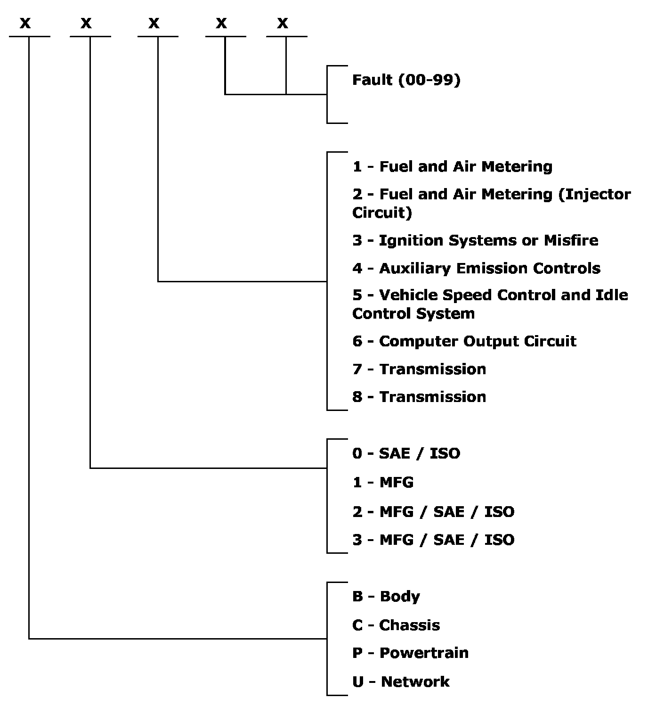
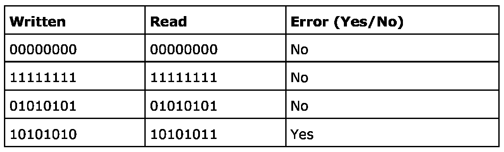

On Board Diagnostics
On Board Diagnostics
- The job of diagnostics is to detect faults and store them so that they can later be read off using the diagnostic tool.
- Diagnostic trouble codes are the result of the fact that much of the software in modern control modules is constantly looking for faults. In an engine management system, for example, more than 50 % of the program code nowadays is used entirely for diagnostics.
- ISO/SAE has specified what diagnostic trouble codes should look like, which is a legal requirement in the USA. ISO/SAE determines all codes which have 0 in the second position.
Examples of diagnostic trouble codes:
- P0107 Manifold Absolute Pressure/Barometric Pressure Circuit Low Input
- P0303 Cylinder 3 Misfire Detected
- P0601 Internal Control Module Memory Check Sum Error
- P0705 Transmission Range Sensor Circuit Malfunction (PRNDL Input)
Table, standards for diagnostic trouble codes

The following are monitored:
- Internal control module faults
- Analog inputs
- Digital inputs
- Outputs
Internal control module faults
Upon starting, the processor (CPU) checks that the check sum is the right one for the ROM. This value is written to the RAM and then read back again to check that the value is the same as the original one.
During operation, a check is carried out to ensure that the program executes certain routines.
See diagnostic trouble code P0601 for Trionic 8 by way of example.
1. The ROM has to be correct as the program is stored there. An error in the program could cause the control module to activate an output in the wrong position or make entirely wrong decisions. The check sum is the sum of the program's entire code and is attached when the control module is programmed. When the control module processor is woken, the entire program will be checked again. The check sum just calculated is compared with the programmed one, and these must be the same, otherwise diagnostic trouble code P0605 is generated.
2. All bytes in the RAM are checked in connection with startup. One byte equals 8 bits, and the process writes 4 different bit patterns and reads them back. The values written and read must be the same. 4 different bit patterns are used because we want to be sure that bits do not infect one another.
The table below shows an example of how an error is detected in a byte in the RAM:

The error is that the second-last bit is infecting the last one with a one. This generates diagnostic trouble code P0604.
3. "Dog Error" is short for "Watchdog Error". A check is carried out to ensure that the program passes certain program steps which are always run.
Analog inputs
The voltage interval 0-5 V from a temperature sensor or pressure sensor is converted in the control module into a digital value, often 0-255 (256 steps), which is equivalent to a byte.
If we know that the bit value is never less than 10 or more than 245 under normal operation, we can set a diagnostic trouble code if the value falls outside of this range.
See diagnostic trouble code P0117 for Trionic 8 by way of example.
In the example above, you can see that the diagnosis is unable to differentiate between interference and a short-circuit to 5 V. The reason for this is that the input has a Pull-Up at 5 V, and this is equivalent to a bit value of 255. This is the greatest value the control module can read. Thus interference generates the same diagnostic trouble code as a short-circuit to 5 V or B+.
The A/D value has to be too high for 0.5 s in order to set the diagnostic trouble code. This is known as the filter time. The filter has to be in place to prevent short-term interference from mobile telephones or the ignition system, for example, from setting diagnostic trouble codes.
The diagnostic trouble code is set after 0.5 s. The MIL (Malfunction Indicator Lamp) or Check Engine, as it is also known, is activated only during the second run in a row where faults have occurred. If the fault is rectified without deleting the diagnostic trouble code, Check Engine will go out after the third fault-free run.
The control module uses a substitute value for coolant temperature which is based on the intake air temperature.
As long as the fault is active, a bus message is sent indicating that the cooling temperature value is implausible. This means that the receiving control module is able to undertake certain action, such as starting the radiator fan and resetting the temperature gauge.
Digital inputs
The camshaft and crankshaft sensor and a door switch are examples of digital inputs. These are more difficult to diagnose. In the case of the camshaft and crankshaft sensor, it may be concluded that there is a fault in the camshaft sensor if only the crankshaft sensor is transmitting signals (Motronic).
Buttons and many other digital inputs are often entirely without diagnostics.
You can see that simply switching on the ignition is not enough for the diagnostics to locate the fault. The crankshaft has to be rotating. If the camshaft is not rotating, the diagnostic trouble code will be set after 12 engine revolutions. If the fault is present from startup and the motor is unable to start without the sensor, it is necessary to turn the engine over on the starter motor before the code is set (e.g. Motronic).
If the cam chain snaps, the diagnostic trouble code will be set. The control module is unable to tell whether the camshaft sensor has stopped transmitting signals because of a mechanical fault or an electrical fault.
Outputs
When at rest, when a last-stage transistor is not activated, the voltage between collector and emitter must be high (often battery voltage). When the transistor is active, the voltage must be low. Otherwise a diagnostic trouble code is set.
Here, the control module first has to have learned that the car is fitted with A/C. This is saved to the RAM. Cars without A/C must not have this diagnostic trouble code stored, although they do not have an A/C relay.
For a diagnostic trouble code regarding interference to be set, the output must be deactivated. The correct voltage for an active output is 0 V.
If the voltage is too high in the case of an active output, a diagnostic trouble code for a short-circuit to B+ is set. This could be due to a burnt relay winding, a short-circuit in the network or made an incorrect connection in the relay base during troubleshooting.
"Warmup" is short for the WarmUp Cycle and is described in US legal requirements. A warmup involves raising the engine temperature by 20 C, and the temperature also has to be in excess of 71 C. If the fault is rectified without deleting the diagnostic trouble code, the diagnostic trouble code will remain in the control module fault memory for 40 warmups.
To bear in mind in respect of On Board Diagnostics:
- Not all faults that arise can be identified. Even if there is no electronic fault for an injector, it does not necessarily mean that it is injecting petrol as it is supposed to. It only indicates that the circuit is OK.
- In general, digital inputs have no or poor diagnostics. Use the diagnostic tool to check the read values.
- In general, analog inputs have good diagnostics. One knows that the circuit is OK if no diagnostic trouble code is set. One cannot, however, be sure that the value is correct. The fact that no diagnostic trouble code is set can be misleading. Use the diagnostic tool to check the read values.
- Outputs generally have good diagnostics. You can be fairly certain that the circuit is unbroken if no diagnostic trouble code is set, but despite this you cannot know whether the device is doing its job. Use the diagnostic tool to activate it and check that it is working.
Relays are sometimes involved. The control module is only able to check that everything is OK in its own circuit, i.e. via the relay winding. This tells you nothing about how the fuel pump or radiator fan is working.